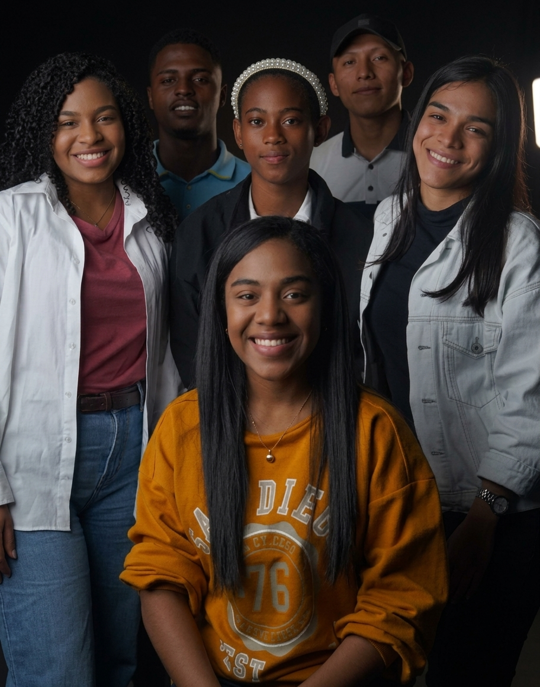
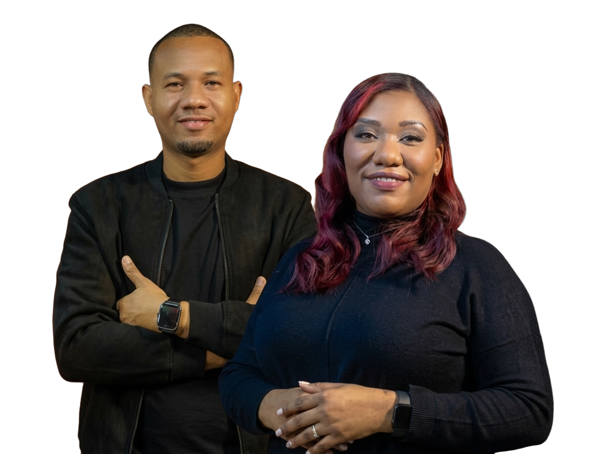

SOBRE NOSOTROS
Somos Generación Reformadora
Somos un movimiento de jóvenes que busca transformar la sociedad con principios y fe.
Generación Reformadora (GR) es el ministerio de jóvenes de Iglesia Gloria Postrera (GP). Somos una generación apasionada por Cristo, comprometida con crecer en la fe, vivir Su Palabra y cumplir el propósito que Dios tiene para nuestras vidas. Buscamos reformar, transformar e impactar nuestra generación, comenzando por una transformación genuina en nuestros corazones. Somos una generación llamada a ser Iglesia dondequiera que vayamos.

Pastores Principales de la Casa
Iglesia Gloria Postrera
La Gloria Postrera de esta casa, será mayor que la primera.
Moisés Bell e Ingrid Bell son los pastores principales de Iglesia Gloria Postrera (GP). Dios los ha unido para levantar una casa donde la fe, el amor y Su presencia sean el centro.
Bajo su cobertura y liderazgo pastoral se encuentra Generación Reformadora (GR), una generación que forma parte de la visión de la casa y que ha sido levantada para crecer, servir y cumplir el propósito de Dios.
A través de su liderazgo y visión, trabajan para edificar una iglesia firme en Cristo, dejando un legado que alcance y transforme a las próximas generaciones.
Una visión, una casa y un propósito: glorificar a Dios.
NUESTROS PASTORES
Guiados con amor y fe
Conoce a quienes lideran Generación Reformadora con pasión por Cristo.
Samir Sugaste y Pielangely Sugaste son los pastores de Generación Reformadora (GR), unidos por Dios para guiar, acompañar e inspirar a una generación con propósito. Con amor y liderazgo, caminan junto a los jóvenes, ayudándolos a fortalecer su relación con Dios, descubrir su llamado y vivir conforme a Su voluntad. Unidos por Dios, guiando una generación con propósito.

¿POR QUÉ UNIRTE?
Transforma tu vida, transforma tu generación
Una generación llamada a transformar el futuro con fe y acción
Crece en tu fe
Fortalece tu relación con Dios, aprende Su Palabra y descubre tu propósito a través de enseñanzas prácticas.
Comunidad real
Rodéate de jóvenes con tu misma pasión, que te acompañan, te apoyan y caminan contigo.
Impacta tu generación
Sé parte de una generación que reforma, transforma e impacta dondequiera que va. Sé Iglesia.
UBICACIÓN
Encuéntranos
Te esperamos con los brazos abiertos
Iglesia Gloria Postrera
Dirección:
Plaza Cuatro Altos, Randolph Avenue, Colón, Provincia de Colón
Horarios:
Domingos 10:00 AM - Culto Principal - Iglesia Tabernaculo de la Fe
Martes 7:00 PM - Martes Apóstolico - Iglesia Gloria Postrera
Viernes 7:00 PM - Viernes de Poder - Iglesia Tabernaculo de la Fe e Iglesia Gloria
Postrera